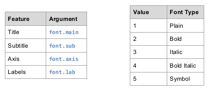

Dzień 1 - Tytuł
Tytuł
Dodatkowo gdy potrzeba nam bardziej rozbudowanych podpisów możemy użyć funkcji title - link. Parametry graficzne są opisane tutaj.

Przykładowe użycia:
cars <- c(1, 3, 6, 4, 9)
plot(cars, type="o", col="blue")
title(main="Samochody", col.main="red", font.main=3)
Parametry do czcionek: 1=plain, 2=bold, 3=italic, 4=bold italic, 5=symbol.
cars <- c(1, 3, 6, 4, 9)
plot(cars, type="o", col="blue")
title(xlab="Indeksy", col.lab="red")Poprawka:
cars <- c(1, 3, 6, 4, 9)
plot(cars, type="o", col="blue", xlab="")
title(xlab="Indeksy", col.lab="red")a<-c(1,2,3,4,5,6,7)
b<-c(23,3,2,4,5,2,-2)
plot(a,b,main="Wykres",axes=FALSE,type="o",col="blue",ann=FALSE)
axis(2, las=1, at=10*0:range(b)[2])
axis(1, at=1:7, lab=c("Pn","Wt","Śr","Czw","Pt","So","Nd"))
box()
Tytuł - ćwiczenia
- Poćwicz samodzielnie różne kombinacje.
- Spróbuj odwzorować w kodzie poniższy wykres.